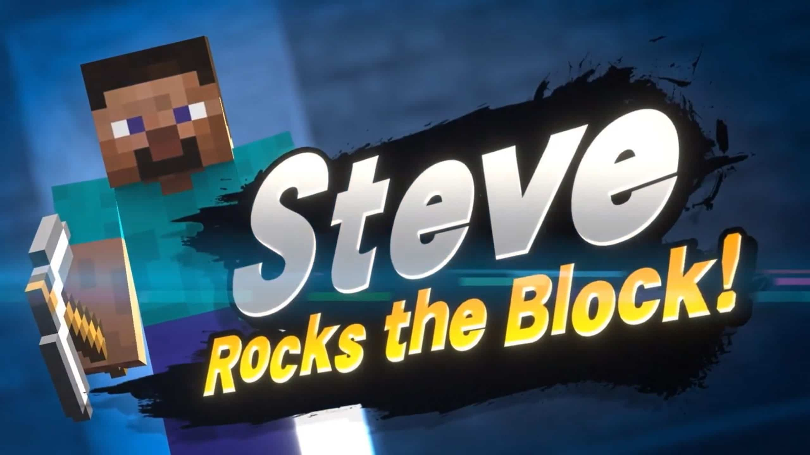
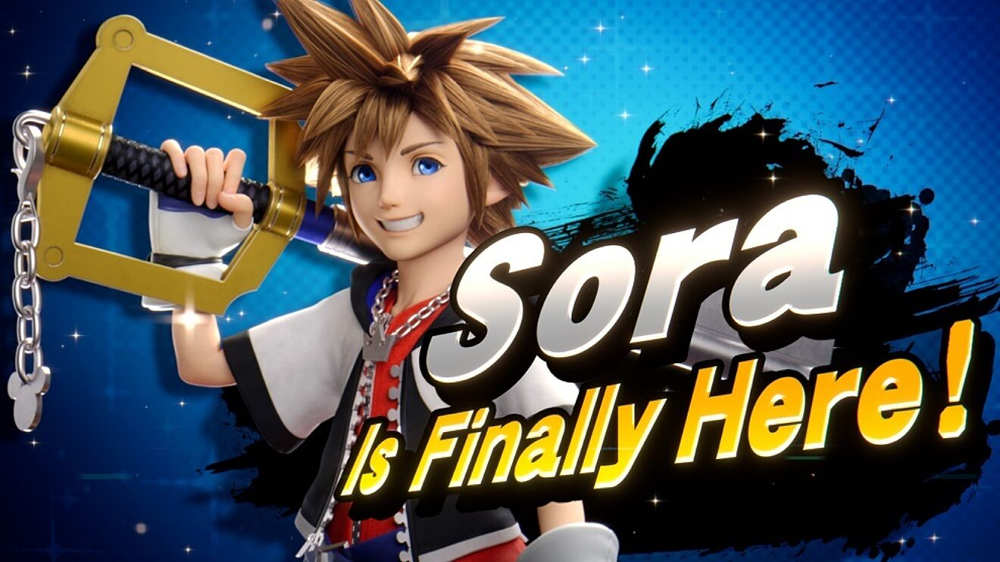
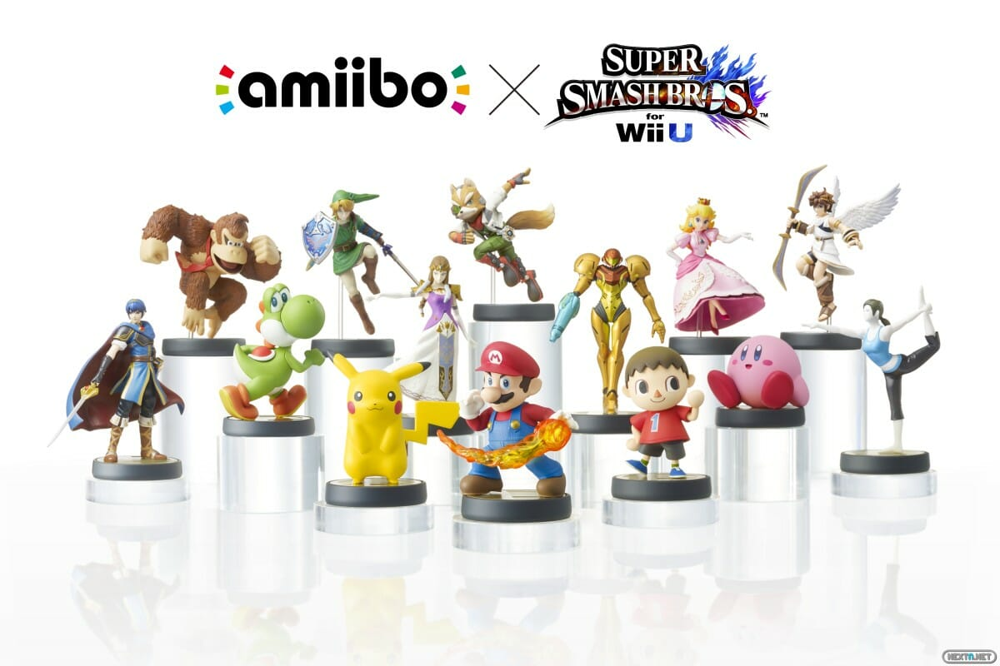

| Smash Bros te vende su juego de peleas, con el cual puedes disfrutar de horas de diversion y entretenimiento, pero desde su ultima entrega, Super Smash Bros Ultimate, que se estreno en 2018, Nintendo implemento una estrategia para no perder la popularidad de sus usuarios, empezarian a meter el "Fighter Pass", en el cual se incluirian personajes DLC, personajes que no pertenecen a ninguna franquicia de nintendo, como Terry Bogard de The King of Fighters, Joker de Persona, y otros personajes. |  |
|  | En total se incluyeron 12 personajes DLC, algunos que se creian imposibles por todos los derechos de autor que implicaba tenerlos en un juego de nintendo, pero a pesar de esto Masahiro Sakurai hizo lo posible por complacer los deseos de los jugadores e incluir a los personajes mas pedidos. |
| Esta estrategia les sirvio demasiado, ya que desde que empezaron a implementar a los luchadores DLC la popularidad del juego incremento mucho y la gente esperaba con ansias los nintendo directs para que se hiciera la revelacion del siguiente luchador. Ademas, tambien estan los amiibos, figuras coleccionables que sirven como almacenamiento inhalambrico de Nintendo para su uso entre las consolas compatibles (3DS, Wii U y la Switch), existen amiibos de muchas franquicias de Nintendo, pero las que son exclusivas de Smash Bros, al utilizarlos estas te desbloquearan al personaje de la figura, y con el cual podras jugar, sin duda algo muy lucrativo, para Nintendo, ya que fuera de esa funcion, solo sirben de colección, pero aun asi son muy vendidos. |  |